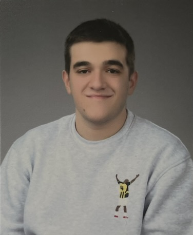

Batıkan Yeğinol

Hakkımda
Ben Batıkan Yeğinol. 20 yaşındayım ve Eskişehir'de yaşıyorum. Şuan web geliştiricisi olma yolundayım
ve bu özgeçmişi kendimi sizlere tanıtmak için hazırladım. Şuan TEI'de teknisyen olarak çalışıyorum
ancak kariyerimi web tarafına yönlendirme kararı aldım. Umarım sitemi beğenirsiniz.
Eğitim
- Eskişehir Teknik Üniversitesi - Mekatronik Programı (2022-)
İş Deneyimlerim
- Tusaş Engine Industries (TEI) (2023 Ocak-)
- Kalite Kontrol Uzmanı olarak çalışıyorum.
- Sertifika çevirileri yapıyorum.
Yeteneklerim ve Diller
- MS Office Programları ⭐️⭐️⭐️⭐️⭐️
- Mekanik Ölçüm Metodları ⭐️⭐️⭐️⭐️⭐️
- İngilizce (C2)
- Almanca (A2)
- Fransızca (A2)
Sertifikalar
- MEGEM - Kalite Kontrol ve Boyutsal Ölçüm Eğitimi (2022 Nisan-2022 Haziran)
- Ölcüm metodları, ölçüm mantığı ve CMM ile ölçüm eğitimini bu kurs ile aldım.
Diğer